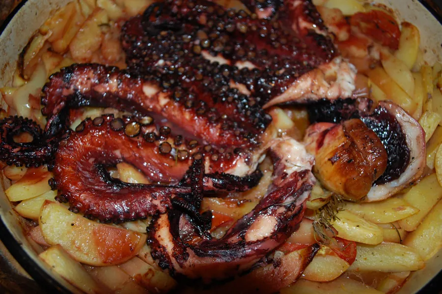
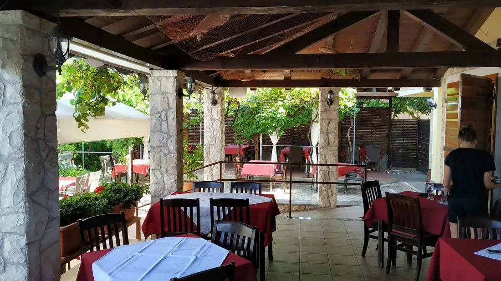

ZATON · NIN · OD 2000.
Konoba Jaz
Obiteljska konoba u Zatonu kod Nina od 2000. Terasa u hladu vinove loze, trideset metara od pješčane plaže.
Obiteljska konoba u Zatonu kod Nina od 2000. Terasa u hladu vinove loze, trideset metara od pješčane plaže.
“Obiteljska konoba u Zatonu, otvorena od 2000. godine.”
Konoba Jaz radi u Zatonu kod Nina od 2000. godine. Obiteljska je: interijer je drveni, uređen u tradicionalnom stilu, a terasa je velika i u hladu stabla vinove loze. Od poznate pješčane plaže dijeli je oko 30 metara — s terase se vidi more, susjedni otoci i samo mjesto Zaton.
U ponudi su pravi dalmatinski specijaliteti: kvalitetna riba, mesna jela, tijestenina, školjke, tradicionalna domaća jela ispod peke i velik izbor jela s roštilja. Uz to pizza, domaća vina i dječji meni.
Riba, meso, školjke, tijestenina i pizza

Konoba je na Šetalištu kneza Branimira 41, uz sam ulaz u Zaton Holiday Resort, oko 30 metara od pješčane plaže. Zaton leži između dva povijesna grada: Nin je 2 km dalje, Zadar 15 km. Mjesto ima pješčane i šljunčane plaže, čisto more i hlad borovih šuma. Od baštine se izdvajaju starohrvatska crkvica sv. Nikole iz 11. stoljeća i ostaci kule iz 16. stoljeća. Parking je dostupan uz konobu.






Ljeti je terasa tražena, osobito navečer. Nazovite i rezervirajte stol. Javite koliko vas je i kada dolazite, ostalo je na nama.
+385 98 169 5744Nazovite i provjerite za dan kada dolazite.
Konoba Jaz je na Šetalištu kneza Branimira 41, uz ulaz u Zaton Holiday Resort, oko 30 metara od pješčane plaže. Iz Nina 2 km, iz Zadra 15 km. Parking je dostupan uz konobu.
Šetalište kneza Branimira 41, 23232 Zaton (Nin)Konoba Jaz je na adresi Šetalište kneza Branimira 41 u Zatonu kod Nina, uz ulaz u Zaton Holiday Resort. Od pješčane plaže dijeli je oko 30 metara. Nin je 2 km dalje, Zadar 15 km.
Radno vrijeme ovisi o sezoni. Nazovite +385 98 169 5744 i provjerite za dan kada dolazite.
Stol se rezervira telefonom na +385 98 169 5744 ili +385 91 787 6846, ili e-poštom na Andrijap1110@yahoo.com.
Parking je dostupan uz konobu.
Plaća se gotovinom ili karticama Mastercard i Visa.
Da. Jelovnik ima dječji meni: dječja pileća prsa s prženim krumpirom i dječji bečki odrezak s prženim krumpirom.
Da. Na jelovniku je pašta ili rižot vegetariano, uz salate i priloge.
Terasa je velika i u hladu vinove loze. S nje se vidi more i susjedni otoci. Unutrašnjost je uređena u tradicionalnom drvenom stilu.